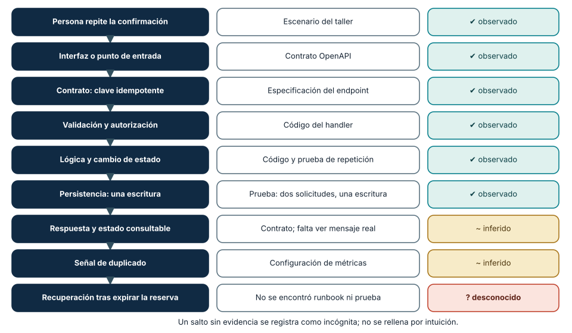
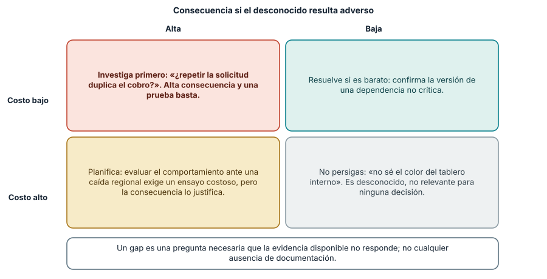
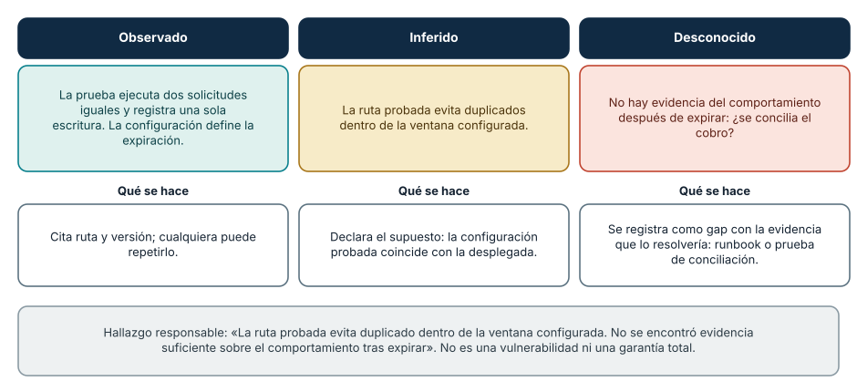

← SE-010 · ↑ Parte 00 · 📚 Índice completo · SE-012 →
Antes de empezar
Hasta aquí estudiaste una lente por vez y la aplicaste a Campus Abierto. El taller cambia la dirección: recibirás un producto real y deberás reconstruirlo desde evidencia. Necesitarás decidir su frontera, seguir una tarea, ubicar responsabilidades, leer fuentes, formular riesgos y distinguir lo observado de lo inferido.
La anatomía resultante debe mostrar una ruta vertical desde la necesidad hasta la operación, además de huecos honestos. No ejecutes código desconocido para llenar esos huecos. SE-012 usará esta evidencia integrada para que tu plan profesional parta de capacidades demostradas y no de una lista aspiracional de tecnologías.
Prerrequisitos
Clases SE-001–SE-010 y capacidad de leer un repositorio sin ejecutar código desconocido.
Problema auténtico
Recibes un producto y una descripción comercial. Debes determinar qué hace realmente, para quién, con qué dependencias, evidencia y riesgos. Repetir el README no constituye una revisión.
Objetivos observables
Reconstruirás una anatomía desde evidencia, diferenciarás afirmación de observación, seguirás un flujo vertical y producirás preguntas que puedan cambiar una decisión.
Temas y por qué importan
| Capa | Evidencia buscada |
|---|---|
| Propósito | problema, usuarios, resultado y límites |
| Contrato | entradas, salidas, errores y compatibilidad |
| Implementación | módulos, datos, dependencias y decisiones |
| Entrega | build, artefactos, configuración y procedencia |
| Operación | señales, recuperación, soporte y retiro |
Mapa conceptual
Ver la notación fuente del diagrama
flowchart LR
U[Usuario] --> X[Interfaz] --> C[Contrato]
C --> L[Lógica] --> D[Datos]
L --> E[Dependencias]
D --> O[Operación]
O --> U
Q[Fuentes y decisiones] --- C
Q --- LEl recorrido es vertical: una tarea cruza superficies. Inventariar carpetas sin seguir comportamiento produce una anatomía nominal.
Conceptos y decisiones
1. Una anatomía responde una pregunta, no enumera directorios
El inventario “frontend, backend, base de datos” reproduce etiquetas del repositorio. Una anatomía explica cómo una persona obtiene un resultado y qué mecanismos lo sostienen. Por eso se elige primero una tarea acotada —por ejemplo, crear y recuperar una solicitud— y se formula qué se desea verificar.
El flujo vertical comienza en la interfaz o punto de entrada, sigue contrato, validación, autorización, lógica, persistencia, dependencias y respuesta, y termina en prueba, señal operativa y recuperación. No todas las capas existen ni están en el mismo repositorio. Un salto se registra como incógnita con la evidencia que permitiría resolverla; no se rellena por intuición.

Cómo leer la figura. Cada fila es un salto de la tarea, de la persona hasta la recuperación; la columna central indica de qué artefacto proviene la evidencia y la derecha la clasifica. Los seis primeros saltos se *observan* en contrato, código y prueba; los dos siguientes se *infieren* a partir del contrato y la configuración sin ver el comportamiento real; el último es *desconocido*. El valor de la figura es que no deja una casilla en blanco: una incógnita queda registrada con su nombre. Dónde deja de valer: la cadena asume un flujo lineal. Un producto real tiene ramas, colas y procesos asíncronos; en ese caso se traza un flujo por cada rama relevante, no se comprime todo en una sola línea.
2. Cada fuente muestra una perspectiva distinta
La documentación expresa intención y uso esperado. El contrato define una superficie. El código y configuración muestran implementación bajo una versión. Las pruebas documentan ejemplos que fueron ejecutados en algún entorno. El historial explica decisiones y evolución. Un artefacto de construcción indica cómo se empaqueta. Logs y métricas pueden mostrar operación real si se tiene acceso autorizado.
Ninguna fuente es una verdad universal. Un README puede estar desactualizado; una prueba puede no cubrir configuración de producción; el código puede contener rutas no desplegadas; ausencia de evidencia no demuestra ausencia de control. Se triangulan fuentes y se clasifica cada hallazgo:
- observado: visible directamente en una ruta, salida o fuente citada;
- inferido: explicación razonada desde observaciones y supuestos;
- desconocido: pregunta relevante que la evidencia no responde.
3. La revisión debe ser segura antes de ser exhaustiva
Un repositorio es entrada no confiable. Antes de ejecutar se leen instrucciones, scripts, dependencias, acceso de red, variables, escritura en disco y necesidad de credenciales. Se trabaja en un entorno aislado o copia autorizada, con datos sintéticos y privilegio mínimo. No se abren secretos ni se conecta producción para completar un ejercicio.
La revisión estática es válida si se declara. “No ejecutado; inferido desde prueba X y configuración Y” es mejor que una afirmación ficticia. Si se autoriza ejecutar, se conservan comando, versión, entorno, salida y recuperación. El objetivo no es maximizar herramientas, sino obtener evidencia proporcional sin crear otro riesgo.
4. Seguir una ruta normal y una degradada
El camino feliz muestra cómo se espera producir valor. El degradado revela si el sistema conserva una capacidad limitada, comunica estado y permite recuperación. Conviene elegir un fallo coherente con la frontera: dependencia lenta, entrada repetida, credencial vencida o dato incompatible.
Para cada paso se pregunta: ¿qué contrato se aplica?, ¿qué estado cambia?, ¿puede repetirse?, ¿cómo se observa?, ¿qué ve la persona?, ¿quién repara? Esta secuencia integra fronteras, ciclo, calidad, riesgo y ética. Un error técnicamente manejado puede seguir siendo una mala experiencia si deja incertidumbre o no ofrece apelación.
5. Priorizar gaps y preparar una revisión reproducible
Un gap no es cualquier ausencia de documentación. Es una pregunta necesaria para evaluar la capacidad que no puede resolverse con evidencia disponible. Se prioriza por consecuencia, probabilidad razonada, alcance y costo de obtener evidencia. “No conozco el color del tablero interno” puede ser desconocido y no relevante; “no sé si repetir la solicitud duplica el cobro” cambia la decisión.

Cómo leer la figura. Un gap se prioriza por dos ejes. La consecuencia mide qué pasa si el desconocido resulta adverso; el costo, cuánto cuesta averiguarlo. El cuadrante superior izquierdo (consecuencia alta, evidencia barata) es siempre la primera parada: una prueba basta para saber si repetir la solicitud duplica el cobro. El inferior derecho agrupa los desconocidos que no cambian ninguna decisión y que no conviene perseguir. Dónde deja de valer: «consecuencia» y «costo» se estiman, y la estimación puede equivocarse. Si una revisión cruzada discrepa en el cuadrante de un gap, esa discrepancia es información útil y se registra.
El informe enlaza rutas y líneas específicas cuando son estables, explica el método y separa recomendaciones de hallazgos. Una revisión cruzada intenta reproducir al menos tres afirmaciones. Si requiere la explicación oral del autor, falta trazabilidad.
Demostración guiada: una solicitud de Campus Abierto
Aunque el taller usa un producto real autorizado, Campus Abierto muestra el método. La pregunta es: “¿una confirmación repetida conserva un único cupo y comunica estado?”. Se ubica el contrato de confirmación, la clave idempotente, la validación, el cambio de estado, la prueba de repetición y la señal de duplicado. Después se busca el camino en que el proveedor tarda y la persona consulta el estado.
El README afirma “operación segura”, pero esa frase no basta. La prueba muestra dos solicitudes iguales y una escritura; la configuración define expiración; no aparece evidencia de conciliación tras el vencimiento. El hallazgo responsable es: “La ruta probada evita duplicado dentro de la ventana configurada. No se encontró evidencia suficiente para determinar el comportamiento después de expirar; verificar runbook o prueba de conciliación”. No se declara una vulnerabilidad ni una garantía total.

Cómo leer la figura. El mismo hallazgo se divide en tres tipos de enunciado. Lo observado puede citarse con ruta y versión; lo inferido depende de un supuesto que se declara (que la configuración probada coincide con la desplegada); lo desconocido se convierte en un gap con la evidencia que lo resolvería. La caja final es la redacción responsable: dice qué se probó y evita tanto la afirmación de seguridad como la de vulnerabilidad. Dónde deja de valer: la frontera entre observado e inferido depende de cuánto de la evidencia se ejecutó. Si solo se leyó el código, incluso «una escritura» es inferencia; por eso se declara si la revisión fue estática o dinámica.
Protocolo completo del taller
- Autoriza y acota: producto, versión, tarea, métodos permitidos y datos.
- Formula preguntas: capacidad, fallo y decisión que cambiará la revisión.
- Reconoce superficies: documentación, contrato, entrada, datos, build y operación.
- Traza un flujo normal: enlaza cada salto y clasifica evidencia.
- Traza un flujo degradado: observa comunicación, estado y recuperación.
- Audita afirmaciones: contrasta README, código, prueba y configuración.
- Prioriza gaps: consecuencia, evidencia necesaria y propietario posible.
- Revisa en cruz: otra persona reproduce hallazgos y cuestiona inferencias.
- Corrige y entrega: conserva límites, comandos autorizados y preguntas abiertas.
Definiciones de trabajo
- flujo vertical: recorrido completo de una tarea por capas;
- punto de entrada: interfaz que inicia comportamiento;
- fuente de verdad: artefacto autorizado para una afirmación concreta;
- evidencia negativa: ausencia o contradicción relevante, no prueba automática de defecto;
- gap: pregunta necesaria que la evidencia disponible no responde.
Glosario
Happy path es recorrido esperado; degraded path conserva capacidad limitada; traceability conecta necesidad, decisión, implementación y evidencia.
Ejemplo mínimo
El README dice «datos cifrados». La configuración muestra TLS para tránsito, pero no cifrado de almacenamiento. La conclusión correcta delimita lo observado y pregunta por la capa ausente.
Ejemplo profesional
En el producto de referencia, sigue la creación de una solicitud desde OpenAPI hasta requisitos, arquitectura, pruebas y runbook. Si el contrato admite reintento pero no hay idempotencia documentada, registra riesgo, no afirmes defecto ejecutado.
Práctica guiada
- Selecciona el producto de
blueprints/reference-product/u otro repositorio autorizado. - Declara alcance y método en
review-plan.md. - Sigue un flujo normal y uno degradado.
- Construye
evidence-map.mdcon enlaces por afirmación. - Registra cinco gaps y prioriza por consecuencia.
- Pide revisión cruzada y corrige inferencias excesivas.
Ejercicios
- Encuentra una afirmación documentada que el código no basta para confirmar.
- Distingue dependencia directa, transitiva y servicio externo.
- Explica cómo retirarías una capacidad sin romper consumidores.
Reto verificable
Una segunda persona reproduce tres hallazgos desde tus rutas y clasifica cada uno como hecho, inferencia o incógnita. Ningún enlace puede apuntar solo a la raíz del repositorio.
Preguntas frecuentes
¿Debo ejecutar todo?
No. Ejecuta solo lo autorizado y seguro; declara qué quedó estático.
¿Más archivos significan más evidencia?
No. Importan relevancia, trazabilidad y capacidad de refutar.
¿Qué hago si el producto no tiene pruebas ni contrato?
Esa ausencia es un hallazgo (evidencia negativa), no un defecto automático. Registra que no se encontró contrato ni pruebas, infiere el comportamiento desde el código con la etiqueta «inferido», y propón la prueba o el contrato mínimo que convertiría esa inferencia en observación. No ejecutes código desconocido para compensar.
¿Cuántos flujos debo trazar?
Uno normal y uno degradado por cada tarea elegida, y solo las tareas que el propósito de la revisión justifica. Trazar todo es una forma de no decidir qué importa.
¿Cómo cito una línea de código si el archivo cambia?
Con una referencia estable: identifica el repositorio, el commit o la etiqueta y la ruta. Una URL a la rama principal puede apuntar a otra cosa mañana; un permalink con el hash del commit sigue mostrando lo que viste.
Fallo controlado y diagnóstico
Elige el producto de referencia del repositorio y escribe un informe de cinco afirmaciones usando *solo* su README. A continuación contrasta cada una con el contrato (OpenAPI), la configuración y las pruebas. Síntoma esperado: al menos una afirmación («operación segura», «datos cifrados», «idempotente») resulta más amplia que lo que sostienen el contrato o las pruebas. Causa: el README expresa intención, no comportamiento verificado. Corrección de método: clasifica cada afirmación como observada, inferida o desconocida, sustituye la frase por una que cite ruta y versión, y registra el gap que falta cerrar. Anota también tu primera contradicción como evidencia de que el método funciona: no la escondas para que el informe parezca más sólido.
Errores comunes y cómo corregirlos
| Síntoma | Causa | Corrección |
|---|---|---|
| informe organizado por carpetas | se inventarió estructura sin seguir capacidad | elige tarea y traza flujo vertical normal y degradado |
| README tratado como prueba | intención confundida con comportamiento | contrasta contrato, implementación, pruebas y configuración |
| ausencia de archivo se declara defecto | evidencia negativa exagerada | registra gap y evidencia necesaria antes de concluir |
| se ejecuta instalación por defecto | no se evaluaron efectos ni autorización | comienza estático, inspecciona scripts y aísla ejecución |
| hallazgo no reproducible | enlaces genéricos y método implícito | cita rutas precisas, versión, pasos y clasificación epistemológica |
Entorno y archivos clave
Editor, Git y navegador. Entrega review-plan.md, system-map.md, evidence-map.md, gaps.md, review.md. No instales dependencias innecesarias.
Seguridad, ética y accesibilidad
No abras secretos, datos reales ni producción. Examina si la interfaz y soporte contemplan acceso alternativo y recuperación.
Puente hacia el trabajo con agentes
Esta es la clase más directamente aplicable al trabajo con asistentes: pedirle a un agente que «explique este repositorio» produce una narración fluida que mezcla lo observado, lo inferido y lo inventado sin señalarlo. El protocolo del taller se convierte en la instrucción: que el agente siga una tarea concreta, cite ruta y línea de cada salto, etiquete observado, inferido o desconocido y liste los gaps en lugar de rellenarlos. Tú verificas una muestra de las citas. Hay además una cuestión de seguridad: un repositorio es entrada no confiable, y un agente con acceso al terminal puede ejecutar instalaciones o scripts maliciosos sin que lo notes. Conviene limitarlo a lectura estática, a un entorno aislado y a permisos mínimos. Las partes sobre harness y seguridad agentic retoman estos límites con detalle.
Transferencia
Repite el flujo en un proyecto de otro stack; conserva preguntas y cambia herramientas.
Evaluación y evidencia
Se evalúan flujo vertical, citas precisas, límites, riesgo y revisión reproducible. Una ficha descriptiva no aprueba.
Fuentes
- SWEBOK v4.0a, áreas de conocimiento usadas en la inspección.
- NASA Systems Engineering Handbook, trazabilidad y revisiones técnicas.
- ACM Code of Ethics, autorización, competencia y evaluación exhaustiva.
- OpenAPI Specification: estructura de un contrato de API; sirve para localizar entradas, salidas y errores en el flujo vertical.
- The C4 model: vistas jerárquicas de un sistema (contexto, contenedores, componentes); ayuda a ordenar la anatomía sin reducirla a carpetas.
- NIST SP 800-218, Secure Software Development Framework: prácticas para revisar y construir software con procedencia y riesgos conocidos; respalda tratar un repositorio ajeno como entrada no confiable.
Límites y siguiente paso
Es una revisión acotada, no certificación de seguridad ni producción. SE-012 convierte resultados en un plan profesional verificable.